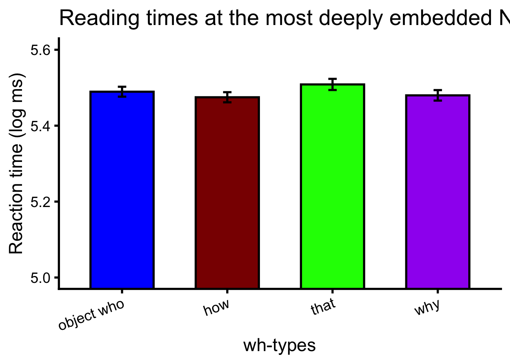

Warning: package 'ggplot2' was built under R version 4.4.3
── Attaching core tidyverse packages ──────────────────────── tidyverse 2.0.0 ──
✔ dplyr 1.1.4 ✔ readr 2.1.5
✔ forcats 1.0.0 ✔ stringr 1.5.1
✔ ggplot2 4.0.2 ✔ tibble 3.2.1
✔ lubridate 1.9.3 ✔ tidyr 1.3.1
✔ purrr 1.0.2
── Conflicts ────────────────────────────────────────── tidyverse_conflicts() ──
✖ dplyr::filter() masks stats::filter()
✖ dplyr::lag() masks stats::lag()
ℹ Use the conflicted package (<http://conflicted.r-lib.org/>) to force all conflicts to become errors
library(pwr) library(emmeans)
Welcome to emmeans.
Caution: You lose important information if you filter this package's results.
See '? untidy'
files <-c(c("0j17p08k.csv","1dg2qhj2b3.csv","1e17ytgq.csv","1fqrd6qr.csv","1lmu0rmy.csv","1orqqvyp.csv","1qr6nnt1.csv","1sftbbwm.csv","2bomnjjb.csv","2ea7uxyc.csv","2ewef3gm.csv","2odgntx7.csv","3e3v39z8.csv","3jtr11xk.csv","3og97j2k.csv","3ut1qsdd.csv","4gjn1seg.csv","4qcemy4k.csv","4yxop4r3.csv","5lqc6nvcre.csv","5vrdpq0t.csv","7f2wtp1j.csv","7lhlpfus.csv","7mza4pym.csv","9kd8a7eb.csv","9nvsempv62.csv","20frs6ol.csv","31by1doq.csv","91mfkpae.csv","120ypmwg.csv","352jd0sb.csv","970gbe0a.csv","a7afpb9w.csv","adbunmf0.csv","ajl3gqra.csv","bn7akg4o.csv","bo3a253d.csv","bqlvmxzf.csv","c1m9yfql.csv","cktudb9s.csv","dsfc282a.csv","e34duc56.csv","el2hvftl.csv","gfzoatpu.csv","h8nlnku2.csv","h6253x9m.csv","hb3mv8ph.csv","hb4brkxq.csv","hs2xklzn.csv","hwsqhjot.csv","jrj7xzuf.csv","k2b5yzkl.csv","k8rnkquz.csv","kl8k8j1y.csv","lta397lq.csv","luzwjk24.csv","lwvpwcq0.csv","m1eabfx1.csv","n8adea4h.csv","na6hh0ua.csv","nflshhgq.csv","o92u56uh.csv","ogyjt8yg.csv","ojv4jxxa.csv","olol1tte.csv","orybxbxu.csv","p3taub1f.csv","pco9vqna.csv","pm5zycnt.csv","ppt63ukd.csv","q330tno2.csv","qbwjdear.csv","qfm8ks37.csv","qgzx1bfu.csv","r0pm70sc.csv","r1o8o6o4.csv","repvu995.csv","rxur173z.csv","s3j977x7.csv","szh4zjou.csv","tf6nb9bm.csv","tpt94g2b.csv","tw3k60gy.csv","txdtrb48.csv","u0pme1hk.csv","u1s85lkk.csv","u2fs8oqd.csv","ucyeq6mc.csv","uu3k1546.csv","vg74l3ea.csv","vgp86ou0.csv","vp4hn41a.csv","w3yqa2f3.csv","xthmgyn8.csv","y14x4t45.csv","yu3vjzn3.csv","z25ltc96.csv" ))# Read and combine all files from ../stimsdata.raw <- files %>%set_names() %>%map_dfr(~suppressMessages(suppressWarnings(read_csv(file.path("../data/pilotb", .x),show_col_types =FALSE ) %>%mutate(rt =as.numeric(rt)) ) ),.id ="source_file" )stims.raw <-read.csv("../stims/stims_abridged_all_info.csv")# Remove filler and practice entries# Focus on only target word for now (i.e. deepest NP in clause)data <- data.raw %>%select(!stimulus) %>%left_join(stims.raw %>%select(item_id, target_word, stimulus), multiple ="first", by =join_by(item_id)) %>%mutate(rt =as.numeric(rt),log_rt =log(rt),whword =factor(ifelse(condition =='a', 'object who', ifelse(condition =='b', 'how',ifelse(condition =='c', 'that','why'))), levels =c("object who", "how", "that", "why"))) %>%# condition = wh-word used in sentencefilter(item_type !='filler'& item_type !='practice'& too_fast ==FALSE) %>%filter(whword !="object who"| word_index <19) %>%mutate(is_target_word = (target_word == word)) # select only deepest embedded NPwrite.csv(data, "../data/pilot_b_data.csv")
Here we only include reading time observations taken at the most deeply embedded N. Further, we eliminate all observations where the reading time < 100 ms (done via the condition too_fast == FALSE).
data_embedded <- data %>%filter(is_target_word) # select only depeest embedded NP
Description of each field:
source_file: the original file in the directory ‘data’ storing a given participant’s data
participant_id: 4-char participant id provided by Prolific
rt: reading time (log_rt: log transformed reading time)
condition: value from ‘a’-‘d’ describing type of stimulus sentence
word: word at which reading time was measured
whword: one of four values “object who”, “why”, “how”, or “that” – denotes the type of relative clause in the stimulus
summary(data_embedded)
source_file rt response trial_type
Length:5132 Min. : 100.0 Length:5132 Length:5132
Class :character 1st Qu.: 181.0 Class :character Class :character
Mode :character Median : 216.0 Mode :character Mode :character
Mean : 352.3
3rd Qu.: 291.0
Max. :193537.0
trial_index time_elapsed internal_node_id subject_id
Min. : 86.0 Min. : 22889 Length:5132 Length:5132
1st Qu.: 425.0 1st Qu.: 318959 Class :character Class :character
Median : 769.0 Median : 489950 Mode :character Mode :character
Mean : 773.5 Mean : 558734
3rd Qu.:1115.0 3rd Qu.: 703740
Max. :2916.0 Max. :2401578
study_id session_id participant_id consent_response
Length:5132 Length:5132 Length:5132 Length:5132
Class :character Class :character Class :character Class :character
Mode :character Mode :character Mode :character Mode :character
consent_timestamp view_history trial_type_label no
Min. :NA Length:5132 Length:5132 Length:5132
1st Qu.:NA Class :character Class :character Class :character
Median :NA Mode :character Mode :character Mode :character
Mean :NaN
3rd Qu.:NA
Max. :NA
NA's :5132
exp_id condition item_type item_id
Length:5132 Length:5132 Length:5132 Length:5132
Class :character Class :character Class :character Class :character
Mode :character Mode :character Mode :character Mode :character
is_practice word word_index word_count too_fast
Min. :0 Length:5132 Min. :10 Min. :19.00 Mode :logical
1st Qu.:0 Class :character 1st Qu.:10 1st Qu.:21.00 FALSE:5132
Median :0 Mode :character Median :10 Median :21.00
Mean :0 Mean :10 Mean :20.51
3rd Qu.:0 3rd Qu.:10 3rd Qu.:21.00
Max. :0 Max. :10 Max. :21.00
correct_answer response_label correct plugin_version
Length:5132 Length:5132 Mode:logical Length:5132
Class :character Class :character NA's:5132 Class :character
Mode :character Mode :character Mode :character
target_word stimulus log_rt whword
Length:5132 Length:5132 Min. : 4.605 object who:1286
Class :character Class :character 1st Qu.: 5.198 how :1288
Mode :character Mode :character Median : 5.375 that :1283
Mean : 5.488 why :1275
3rd Qu.: 5.673
Max. :12.173
is_target_word
Mode:logical
TRUE:5132
# Compute mean reaction time per conditionagr <- data_embedded %>%group_by(whword) %>%summarise(n =n(), se =sd(log_rt) /sqrt(n()), y =mean(log_rt)) %>%mutate(whword =factor( whword,levels =c("object who", "how", "that", "why") ) )# Order whword elements to be object who, how, that, whyagr
# A tibble: 4 × 4
whword n se y
<fct> <int> <dbl> <dbl>
1 object who 1286 0.0131 5.49
2 how 1288 0.0133 5.47
3 that 1283 0.0147 5.51
4 why 1275 0.0138 5.48
ggplot(agr, aes(x = whword, y = y, fill = whword)) +geom_bar(stat ="identity", width =0.6, color ="black", linewidth =1) +geom_errorbar(aes(ymin = y - se, ymax = y + se ), width =0.08, linewidth =1 ) +scale_fill_manual(values =c("object who"="blue","how"="darkred","that"="green","why"="purple")) +coord_cartesian(ylim =c(5, 5.6)) +labs(x ="wh-types", y ="Reaction time (log ms)") +ggtitle("Reading times at the most deeply embedded N") +theme_classic(base_size =18) +theme(legend.position ="none",axis.text.x =element_text(angle =20,hjust =1 ),axis.line =element_line(linewidth =1),axis.ticks =element_line(linewidth =1) )

Here we measure specifically the effect which Kim et al. (2025) found significant: whoobj and how vs. why at the most deeply embedded N.
# Omit that, just compare who_obj and how with whylibrary(lme4)
Loading required package: Matrix
Attaching package: 'Matrix'
The following objects are masked from 'package:tidyr':
expand, pack, unpack
library(lmerTest)
Attaching package: 'lmerTest'
The following object is masked from 'package:lme4':
lmer
The following object is masked from 'package:stats':
step
Linear mixed model fit by REML. t-tests use Satterthwaite's method [
lmerModLmerTest]
Formula: log_rt ~ is_why + (1 | participant_id) + (1 | item_id)
Data: data_no_that
REML criterion at convergence: 4284.7
Scaled residuals:
Min 1Q Median 3Q Max
-2.3958 -0.4855 -0.1742 0.2106 14.5422
Random effects:
Groups Name Variance Std.Dev.
participant_id (Intercept) 0.06638 0.2577
item_id (Intercept) 0.00000 0.0000
Residual 0.16586 0.4073
Number of obs: 3849, groups: participant_id, 94; item_id, 14
Fixed effects:
Estimate Std. Error df t value Pr(>|t|)
(Intercept) 5.478e+00 2.785e-02 9.805e+01 196.688 <2e-16 ***
is_whywhy -4.784e-03 1.395e-02 3.755e+03 -0.343 0.732
---
Signif. codes: 0 '***' 0.001 '**' 0.01 '*' 0.05 '.' 0.1 ' ' 1
Correlation of Fixed Effects:
(Intr)
is_whywhy -0.165
optimizer (nloptwrap) convergence code: 0 (OK)
boundary (singular) fit: see help('isSingular')
Here the effect size points in the same direction as Kim et al. (2024) – why items are read faster than who/how, but the effect is no longer significant.
# Omit why, just compare who_obj and how with whydata_no_that_no_how <- data_no_that %>%filter(whword !='word') %>%mutate(is_why =ifelse((whword =='why'), "why", "who_obj"))model_3 <-lmer( log_rt ~ is_why + (1| participant_id) + (1| item_id),data = data_no_that_no_how)
boundary (singular) fit: see help('isSingular')
# View resultssummary(model_3)
Linear mixed model fit by REML. t-tests use Satterthwaite's method [
lmerModLmerTest]
Formula: log_rt ~ is_why + (1 | participant_id) + (1 | item_id)
Data: data_no_that_no_how
REML criterion at convergence: 4284.7
Scaled residuals:
Min 1Q Median 3Q Max
-2.3958 -0.4855 -0.1742 0.2106 14.5422
Random effects:
Groups Name Variance Std.Dev.
participant_id (Intercept) 0.06638 0.2577
item_id (Intercept) 0.00000 0.0000
Residual 0.16586 0.4073
Number of obs: 3849, groups: participant_id, 94; item_id, 14
Fixed effects:
Estimate Std. Error df t value Pr(>|t|)
(Intercept) 5.478e+00 2.785e-02 9.805e+01 196.688 <2e-16 ***
is_whywhy -4.784e-03 1.395e-02 3.755e+03 -0.343 0.732
---
Signif. codes: 0 '***' 0.001 '**' 0.01 '*' 0.05 '.' 0.1 ' ' 1
Correlation of Fixed Effects:
(Intr)
is_whywhy -0.165
optimizer (nloptwrap) convergence code: 0 (OK)
boundary (singular) fit: see help('isSingular')
agr <- data %>%group_by(word_index, whword) %>%summarise(y =mean(log_rt))
`summarise()` has grouped output by 'word_index'. You can override using the
`.groups` argument.
agr
# A tibble: 82 × 3
# Groups: word_index [21]
word_index whword y
<dbl> <fct> <dbl>
1 0 object who 5.51
2 0 how 5.51
3 0 that 5.51
4 0 why 5.51
5 1 object who 5.42
6 1 how 5.44
7 1 that 5.44
8 1 why 5.43
9 2 object who 5.44
10 2 how 5.44
# ℹ 72 more rows
words <-c("the","father","considered","wh-element","the","naive","babysitter","that","the","spunky","children","loved","unexpectedly","and","benevolently","handed","the","toys","to","the","grandma")agr %>%mutate(``= whword) %>%ggplot(aes(x = word_index, y = y,color =``,group =``)) +geom_line(linewidth =1) +geom_point(size =2) +theme(axis.text.x =element_text(angle =90,vjust =0.5,hjust =1 ) ) +scale_x_continuous(breaks =seq_along(words) -1,labels = words ) +ggtitle("Means of region-by-region reading times") +labs(x="Words", y="Mean reading time (log ms)")